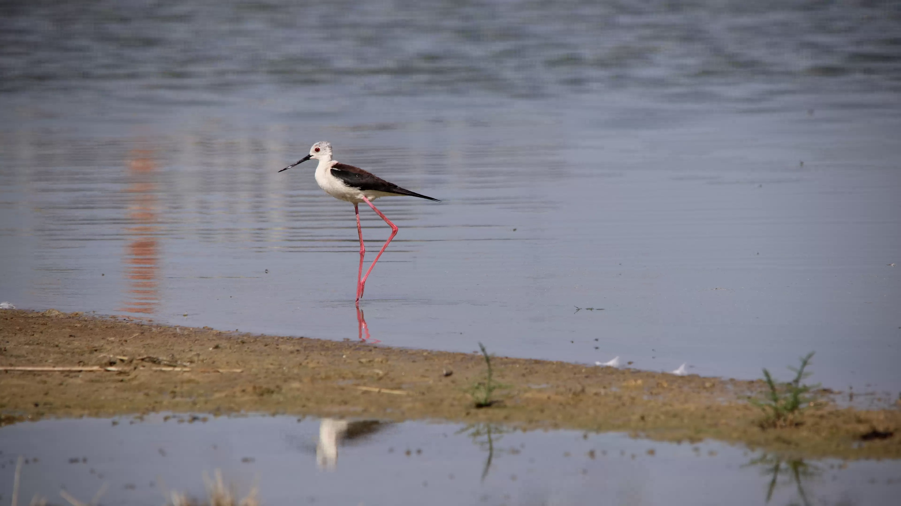

Himantopus himantopus — a long-legged wader, both resident and migrant
Name and identity
The Black-winged Stilt, known in Arabic as Abu al-Maghazil or al-Karsu, is a wader in the family Recurvirostridae and order Charadriiformes. This account follows modern classifications that separate the Old World species, found in Africa, Europe and Asia, from other stilts. Species limits differ between references and checklists; its information should not be confused with that for American or similar Hawaiian stilts.
How to identify it
Exceptionally long pink legs, a slender straight black bill, and a white body contrasting with dark wings are its most conspicuous features. In flight, the legs project far beyond the tail, while the black underwings contrast with the white belly. Its straight bill distinguishes it from the avocet, whose bill curves upwards.
An adult male has a blacker back, whereas the female’s back tends towards dark brown. However, the amount of black on the head varies and cannot determine sex on its own. Juveniles have brown upperparts with pale feather fringes and duller legs; some of these features can persist through their first winter. Overall shape and plumage should therefore be considered together, rather than head colour alone.
Habitat and food
It uses shallow fresh, brackish and saline water, including marshes, coastal lagoons, pools and mudflats. It also benefits from some constructed wetlands, including treatment ponds, where suitable margins are available. It feeds mainly on small invertebrates, such as aquatic insects and their larvae, molluscs and crustaceans. It picks prey from the water surface and mud, and may immerse its bill to search for food; its legs allow it to wade without submerging its body.
Daily behaviour
It is seen alone or in groups, resting on banks or in shallow water. Its sharp repeated calls may draw attention before the bird itself is noticed. During periods of movement, flock sizes vary between sites: a large flock does not imply local breeding, and summer presence alone does not establish nesting.
Breeding and life cycle
It nests singly or in loose colonies, using a ground scrape or a platform of vegetation close to water, sometimes on a small island. Both parents build the nest, incubate and care for the young. A clutch usually contains four eggs, with incubation lasting approximately 24–26 days. Chicks leave the nest soon after hatching and usually become capable of flight at around one month old. The calendar is not identical everywhere: water availability and local conditions influence breeding timing and success.
Where does it occur in Arab countries?
It cannot be described simply as a winter visitor throughout the Arab world. Saudi Arabia has resident breeding populations as well as common passage migrants and winter visitors; constructed wetlands have helped its expansion. In Oman, breeding, residency, passage and wintering also overlap. The United Arab Emirates records migrants and breeding residents, including at Al-Zora. In Kuwait, it is a common passage migrant and scarce winter visitor, with local breeding.
In Iraq, breeding occurs alongside passage and winter presence. In Lebanon, passage predominates, and the national checklist gives an autumn passage period extending into late October. North Africa has documented breeding sites in Morocco, Algeria and Tunisia, while nesting has also been recorded on Egypt’s Mediterranean coast. Morocco holds wintering birds too. However, a sighting within a country does not establish that all its birds are resident, or that every wetland is a nesting site.
Why is it relevant in autumn?
Some northern populations migrate south, while others remain resident or move locally. At this time of year, migrants and local birds may occur together, depending on the country and site. Late October is therefore a suitable time to watch for it in Arab wetlands, without treating that month as a uniform regional peak. Useful observations include the date, bird count and water conditions; watch through binoculars from a distance that does not make birds take flight or stop feeding.
Conservation and the limits of assessment
The 2025 Red List assessment classifies it as Least Concern (LC), under the broad taxonomic definition adopted by that assessment. That category does not remove local risks: changing water levels and disturbance can harm nesting. A study near Essaouira demonstrated the combined influence of rainfall variation and human disturbance. Protecting habitat matters more than relying on the bird’s apparent abundance.
References
Sources: IUCN Red List, 2025 assessment; Atlas of the coastal and seabirds of Lebanon, 2021; British Trust for Ornithology; Royal Society for the Protection of Birds; Blasco-Zumeta and Heinze identification guide; Hong Kong Bird Watching Society; Naturalis; Mpala Research Centre field guide; The Birds of Saudi Arabia; Official Kuwait Bird List; Birds of Oman database; Ramsar, Al-Zora; OSME and Lebanon checklists; Wetlands International; Wader Study research on Egypt and Morocco. Information reviewed: 25 October 2026.
Photo: still frame from footage by Xadrik — Wikimedia Commons (CC0).